Computations of linearized equations (3) in the presence of roundoff errors may lead to the following interesting phenomenon. Suppose that the unknown function f(x) is a rational function which is continuous in [x0,xm+n]. Let the actual degrees of the numerator and the denominator polynomials of f(x) be m-d and n-d, respectively, for a positive d. That is
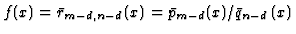
. Here, we consider rational function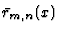
interpolating Dsuch as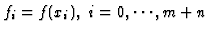
. There are a lot of rational functions passing the data set D but have different degrees. There are any polynomials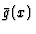
whose degree is d such as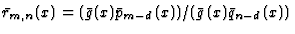
. Thus, linearized equations (3) have no unique solution. However, in the floating number computations, because of the presence of roundoff errors the numerical solution will produce the pair of polynomials P(x) and Q(x) of degrees m and n, respectively. The numerical rational interpolation P(x)/Q(x) should approximate one of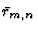
. That is P(x)/Q(x)=(gp(x)pm-d(x))/(gq(x)qn-d(x)). In algebraic computations we can remove from rational function by GCD computations. However in floating computations the coefficients of P(x)/Q(x)are slightly different from . Thus, polynomials gp(x) and gq(x) remain in the numerical rational interpolation. Furthermore, it may occur that for some zwe have simultaneously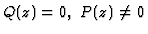
, and then the computed ratio P(x)/Q(x)will be a very poor approximation to f(x) at z and near z. In this case, a natural way to improve the approximation is to compute g(x), an approximate-GCD of P(x)and Q(x), then compute the symbolic quotients p(x)=P(x)/g(x) and q(x)=Q(x)/g(x), and finally output p(x)/q(x) as an improved hybrid rational interpolation to f(x). We call these procedures Hybrid Rational Function Approximation and show the algorithm as follows:
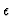
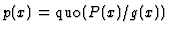
and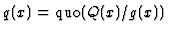
, where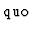
is a quotient obtained by polynomial division.Any algorithms for (non-unique) approximate-GCD and for polynomial division are available. Several methods of calculating approximate-GCDs have been proposed other than Schönhage [7], Sasaki and Noda [11]. They use different norms for the definition of approximate-GCDs, i.e. L1 norm (c.f. Pan[9], Hribernig and Stetter[8]), L2 norm (c.f. Corless, Gianni, Trager and Watt[6], Karmarkar and Lakshman[5]) or norms estimated in a domain (c.f. Sederberg and Chang[10]). For further discussions to establish the error estimate of HRFA, we use the approximate-GCD proposed by Hribernig and Stetter.